Modernize intelligent apps and agents with .NET that scale as you grow
Official description
.NET helps you build high performance services, add AI where it matters, and stay productive across the stack. In this session, we show how using Managed Instance on Azure App Service, you can modernize legacy .NET apps without code rewrites, remove migration blockers, retain dependencies, and move to a scalable PaaS foundation while reducing cost and accelerating innovation.
Summary
Overview
Azure App Service product managers present a modernization path for legacy .NET applications that avoids full rewrites: Managed Instance on Azure App Service brings Windows dependencies into a PaaS foundation, while new Built-in MCP support turns existing REST APIs into AI-consumable tools. The session pairs platform capabilities with GitHub Copilot app modernization tooling and ends with a full demo migrating an ASP.NET Framework web app.
Key announcements
- Built-in MCP for Azure App Service (public preview) — Announced at Build [00:13:01
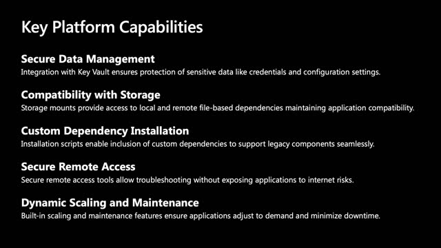
m05s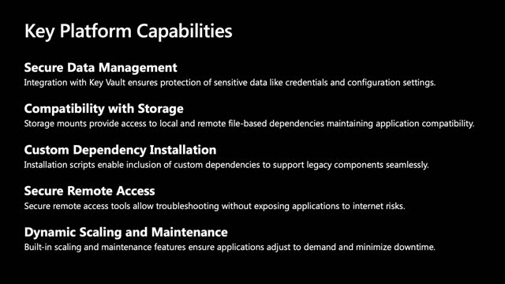
m10s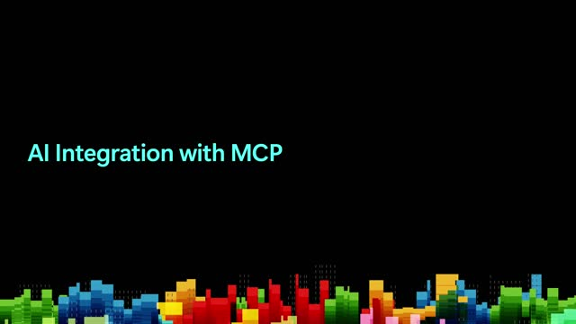
p05s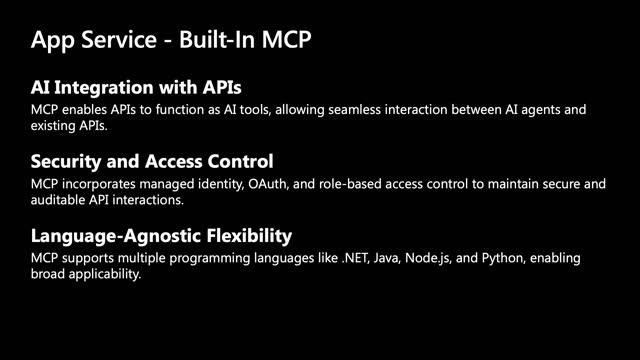
p10s], it detects an application's APIs and exposes them as MCP tools secured via managed identity, OAuth, and RBAC, supporting .NET, Java, Node.js, and Python. - Agent observability in App Service — A new capability surfacing agent counts, call volume, token usage, and error rates over the last 30 days, with drill-through into Application Insights logs [00:45:01
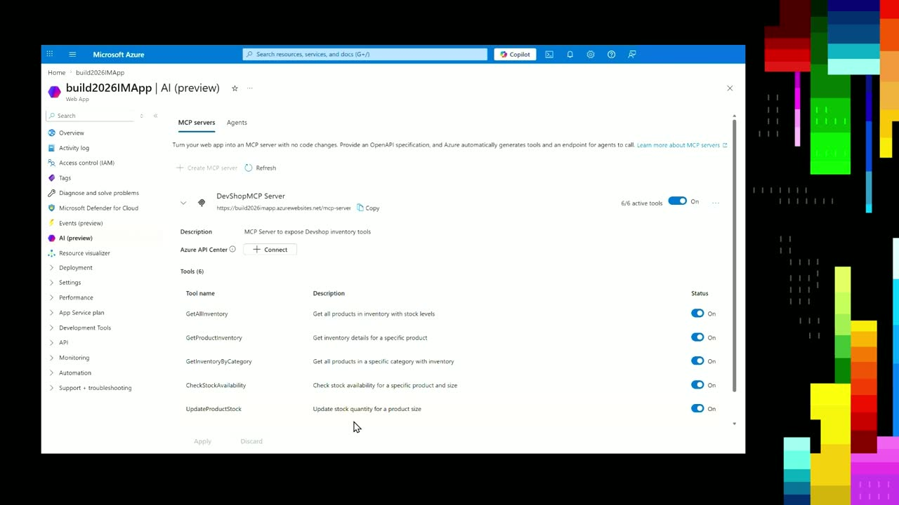
m05s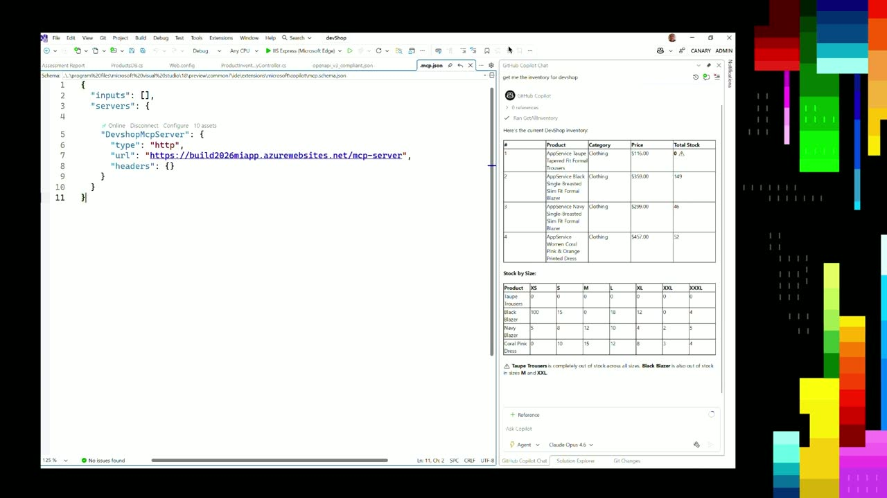
m10s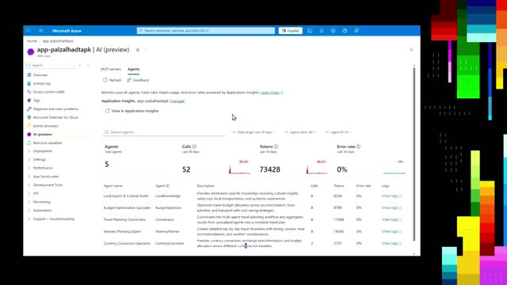
p05sp10s]. - Managed Instance on Azure App Service (public preview) — Recapped from Ignite in November [00:05:06
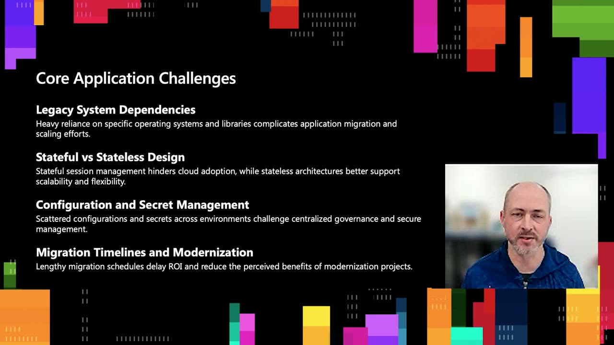
m05s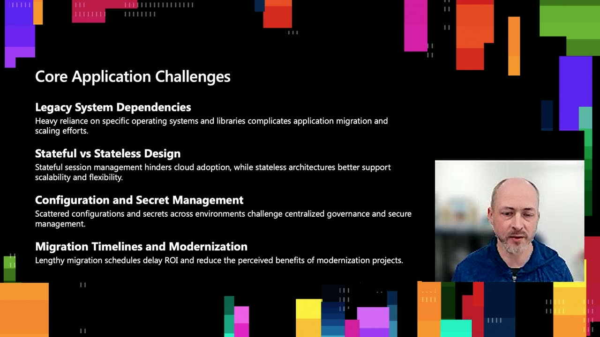
m10s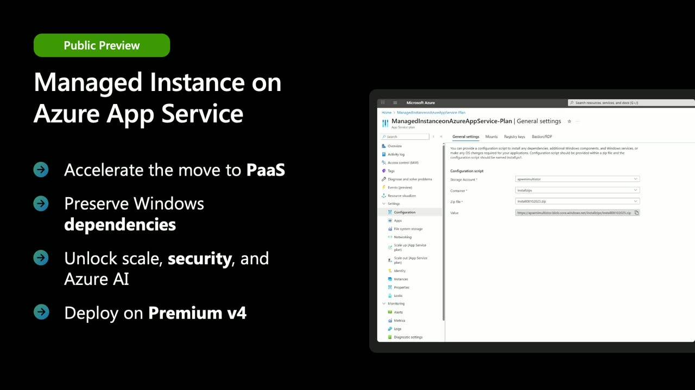
p05s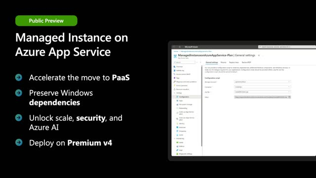
p10s], it preserves Windows and third-party dependencies, supports registry access, drive-letter storage mounts, and custom install scripts, and runs on the Premium v4 SKU. - Secure RDP access via Azure Bastion — For the first time in Azure App Service, instances can be reached through Azure Bastion for troubleshooting with familiar tools like Event Viewer, Registry Editor, and IIS Manager [00:11:24
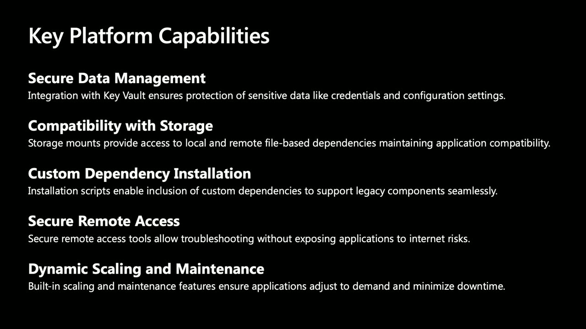
m05sm10sp05sp10s].
{kind=link}
{kind=link}
{kind=link}
{kind=link}
{kind=link}
{kind=link}
{kind=link}
{kind=link}
{kind=link}
{kind=link}
{kind=link}
{kind=link}
{kind=link}
{kind=link}
{kind=link}
{kind=link}
Topics covered
- Modernization challenges: legacy OS dependencies (MSMQ, GDI), stateful vs. stateless design, scattered configuration and secret management, and lengthy migration timelines.
- Preserving Windows dependencies with zero or minimal code changes using PowerShell install scripts (
install.ps1) packaged with MSIs. - Cloud-native benefits: horizontal and vertical scaling, availability zones, managed identity, Key Vault-backed secrets, and operational offloading of patching and maintenance.
- Incremental modernization as a pathway versus full rewrites.
- Storage mounting to Azure Files, UNC shares, or local (non-persistent) drives, and registry values stored as Key Vault secrets.
- Agentic application patterns: domain-specialized agents with an orchestrator selecting execution sequences.
- Converting an inventory REST API into an MCP server via an OpenAPI-compliant JSON spec, then consuming it from GitHub Copilot.
- Using GitHub Copilot app modernization tooling in Visual Studio to run assessments comparing migration targets (Managed Instance shows zero mandatory blockers vs. two for App Service Windows sandbox).
Notable quotes
"To be honest, we're aiming for zero code changes as well." — Andrew Westgarth
"So that's how easy we are making it for you to go ahead and reuse your REST APIs as MCP servers." — Gaurav Seth
"Remember, local mounts are the formally nature, meaning for any reason if this instance gets restarted, any content which is on this local file share will get lost." — Gaurav Seth
Products and tools mentioned
- Azure App Service
- Managed Instance on Azure App Service
- Azure App Service Built-in MCP
- GitHub Copilot app modernization tooling
- Visual Studio
- Azure Bastion
- Azure Key Vault
- Azure Files
- Application Insights
- Premium v4 (Pv4) SKU
- Azure SQL
- Hyper-V
- ASP.NET Framework
- .NET Core
- log4net [inferred]
- OpenAPI
Speakers featured
- Andrew Westgarth — Product Manager, Azure App Service
- Gaurav Seth — Product Manager, Azure App Service
Follow-up resources
- App Service @ Build 2026 blog (App Service announcements)
- A three-article series on agentic app development with .NET
- Documentation overviews for Managed Instance on Azure App Service
- Documentation on the GitHub Copilot app modernization tooling
- Gaurav Seth's blog article on an agentic IIS migration pathway to Managed Instance (source code downloadable from GitHub)
Transcript
Show / hide transcript (54,456 chars)
[00:00:00] [ Music ] [00:00:05] ANDREW WESTGARTH: Hi, welcome to this session [00:00:07] on Modernizing Intelligent Apps and Agents with.NET [00:00:10] that scale as you grow. [00:00:12] My name's Andrew Westgarth, and I'm here with Gaurav Seth. [00:00:16] And we are product managers on Azure App Service, [00:00:18] and we're delighted to be able to take you [00:00:20] through some new capabilities with inside Azure App Service [00:00:23] that are going to seriously accelerate your journey [00:00:26] to the cloud and your exploration with AI. [00:00:29] Let's have a look at what we're going to cover today [00:00:31] and what's the agenda for the session and key topics [00:00:34] that we're going to cover with you. [00:00:38] So when we talk about modernization of applications, [00:00:41] there are a variety of challenges [00:00:42] that organizations face. [00:00:44] And we're going to get into those today and have a look [00:00:46] at all of the different things [00:00:48] that can cause problems while modernizing existing [00:00:51] applications or scaling new projects. [00:00:54] We're going to go and review a feature that we launched back [00:00:58] at Ignite in November called "Managed Instance [00:01:01] on Azure App Service". [00:01:03] Managed Instance on Azure App Service helps [00:01:05] to address a number of those challenges and helps to improve [00:01:10] and speed up cloud migration [00:01:12] without massive redevelopment of applications. [00:01:15] At this Build event, we are introducing a new capability [00:01:18] with inside Azure App Service called "Built-in MCP". [00:01:22] We're going to dive into that and look at how it can help you [00:01:25] to expose APIs as AI consumable tools, enhance that integration [00:01:31] and automation capabilities, and you can use this new tool [00:01:34] with both existing and brand new development. [00:01:38] We'll take a look at how the GitHub Copilot App Modernization [00:01:42] tooling can help to identify areas [00:01:45] with which you can make code changes or run assessments [00:01:49] of existing applications, to see any potential problems [00:01:53] that you might run into during a migration project, [00:01:55] but also use the power of GitHub Copilot to make those changes [00:01:59] to your applications across multiple languages. [00:02:02] And then we'll switch to my colleague [00:02:03] for a detailed demonstration of everything [00:02:05] that we've seen today, and then we'll wrap up with a summary [00:02:08] and some key resources for you to go away and take [00:02:11] into your next modernization project. [00:02:14] Understanding Modernization Challenges. [00:02:17] So through months and years of research and experience [00:02:20] of working with customers that are looking to migrate [00:02:23] and modernize a huge raft of different types of applications, [00:02:28] we've identified some key application challenges [00:02:31] that customers face. [00:02:33] So legacy system dependencies often comes up in terms [00:02:36] of there is a heavy reliance on specific operating systems [00:02:41] or capabilities with inside that operating system, [00:02:43] so that could be key features, say, in a Windows server [00:02:46] such as MSMQ client, or maybe MSTP, or some APIs [00:02:51] with inside Windows, so GDI, drawing libraries, [00:02:54] those kinds of things, in additional from third parties. [00:02:58] So you might have reporting libraries, or control sets, [00:03:02] or things that were developed in-house. [00:03:05] There are key components with inside your application. [00:03:09] These often prevent challenges for customers looking [00:03:12] to migrate their applications in scale. [00:03:15] Often, especially with platform-as-a-service offering, [00:03:18] such as app service, traditionally, [00:03:19] we don't allow you to install third-party components [00:03:22] or self-built components to MSIs and XS. [00:03:26] We're going to look at how we have addressed that challenge. [00:03:28] Stateful versus Stateless Design. [00:03:31] So if your applications are very, very stateful, [00:03:34] so you rely heavily on session management, [00:03:37] that prevents massive scale, [00:03:40] because often your stateful session is managed [00:03:43] with inside memory, as opposed into an external provider [00:03:46] like a database, or table storage, [00:03:48] or maybe it's even a Redis cache, [00:03:50] where stateless architectures help with scalability [00:03:53] and flexibility out of the box. [00:03:55] So for some, you may have addressed these problems [00:03:57] on-premises where you've come from individual server to more, [00:04:01] or maybe it's now you're identifying [00:04:03] that during a cloud adoption program that you need [00:04:07] to tackle these problems. [00:04:09] Configuration and Secret Management. [00:04:12] So throughout industry and throughout different enterprises [00:04:15] and companies, a variety [00:04:17] of different scattered configuration management [00:04:20] services are used, and secrets are shared and managed [00:04:24] through noncentralized touring, but it's all unique [00:04:28] to your individual flow. [00:04:30] How do you handle centralized governance [00:04:33] and secure management, how can Azure help you with this? [00:04:38] Migration Timelines. [00:04:39] Often once an assessment's been done, companies are faced [00:04:43] with lots and lots of different tasks that they need to be able [00:04:46] to do to achieve their migration and to modernize, [00:04:49] and often it's a case of this simple modernization on the face [00:04:53] of it takes multiple months. [00:04:55] How can we shorten that, and how can we increase the benefit [00:04:59] of modernization projects [00:05:01] to increase return on your investment? [00:05:04] Managed Instance on Azure App Service. [00:05:06] So as I mentioned earlier, back in November at Ignite, [00:05:10] we introduced Managed Instance on Azure App Service. [00:05:13] And this is an offering that we have in public preview today. [00:05:16] And the goal of Managed Instance on Azure App Service is [00:05:19] to accelerate the move to platform-as-a-service, [00:05:22] to give you extreme flexibility but high-scale. [00:05:26] You can preserve your Windows dependencies [00:05:28] and bring them along with you, your third-party dependencies, [00:05:30] or most dependencies that you have [00:05:33] with inside the Windows Server OS. [00:05:35] You can unlock scale by being able to be on top [00:05:39] of the platform-as-a-service so we can go from, say, [00:05:41] one instance out to 30 instances quickly with a few clicks, [00:05:45] or template deployment, or CLI command, rather than thinking, [00:05:48] "I've got to go and rack up multiple servers, build them, [00:05:52] build VMs, build physical (inaudible)," you can now do it [00:05:55] at a click of a button. [00:05:57] Security. Everything that's built [00:05:59] with inside Managed Instance is built with security of mind, [00:06:02] be that from using managed identity to talk [00:06:04] out to other services such as SQL for your database backends [00:06:08] or out to Key Vault for your sequence management [00:06:12] and certificate management. [00:06:14] And then on top of that, you can add functionality from Azure AI. [00:06:18] And we're going to go into that into detail [00:06:20] so you can immediately take your Legacy applications [00:06:23] and add value immediately through Agents and MCP. [00:06:28] You deploy on top of our latest SKU, Premium v4, [00:06:32] which is our most performance SKU in our fleet, [00:06:34] and has some really attractive pricing, specifically [00:06:37] for Windows customers. [00:06:39] The foundation for cloud adoption that we've built [00:06:42] with inside Managed Instance on Azure App Service is [00:06:45] to have this goal of minimal code changes. [00:06:48] To be honest, we're aiming for zero code changes as well. [00:06:52] So we see that through Managed Instance being able [00:06:55] to bring those dependencies, you can use a configuration script [00:06:59] to bring those dependencies with you, install server roles [00:07:02] or features, or make changes that you need to in order [00:07:06] to bring your applications with you. [00:07:08] In addition with inside Managed Instance, we have the ability [00:07:12] for you to be able to read and write to the registry [00:07:14] and store those key values with inside Key Vault, [00:07:17] so therefore managing secure, [00:07:19] secret chain all the way through. [00:07:22] You can manage storage volumes with drive letters. [00:07:26] So often on-premises it's something common [00:07:28] to actually have a map drive using a drive letter as opposed [00:07:33] to just a UNC file path. [00:07:35] So therefore you can preserve existing dependencies [00:07:37] and configurations with existing applications [00:07:41] without making any code change whatsoever. [00:07:43] This is really valuable when you don't actually have access [00:07:46] to the source code, or maybe it's a third-party application [00:07:50] that you bought in and you just cannot make changes to it. [00:07:53] But it's absolutely critical to your business [00:07:56] and whether you're going to a data center shutdown [00:07:58] or something similar and you need to move these applications [00:08:01] to the cloud, you can now take this pathway. [00:08:06] You get cloud-native benefits out of the box. [00:08:08] So as we talked about in the overview, [00:08:11] you'll gain from scalability of being able to go from one [00:08:15] to N number of instances immediately, both in terms [00:08:19] of horizontal scaling, but you can also go vertical scaling, [00:08:23] so you can start off on a low-powered instance of maybe [00:08:25] as a single core and low RAM, [00:08:30] up to some really powerful machines, so say, 32 cores [00:08:33] and 256 gig of memory. [00:08:36] So depending on your application needs [00:08:38] and your scalability needs, it's available to you at the click [00:08:41] of a button, as opposed to long procurement processes. [00:08:46] As we discussed, we've built [00:08:47] in high security all the way through, so we require you [00:08:52] to use managed identities throughout, [00:08:54] and then you can use those to connect to other Azure services [00:08:59] to improve your security posture from day one. [00:09:02] And you get the high availability that you get [00:09:04] from a platform-as-a-service offering by being able [00:09:07] to use multiple instances but also take advantage of things [00:09:10] like availability zones to have your application spread [00:09:14] into areas to enable that resiliency. [00:09:20] Managed Instance also offers operational offloading, [00:09:23] so app service-as-a-platform as a service offering, [00:09:26] and as a result, we take care of infrastructure maintenance, [00:09:29] patching, scaling, freeing development teams to focus [00:09:32] on value, and equally your operations teams, [00:09:35] because the total cost there of operations teams having [00:09:38] to patch all of these instances have gone, [00:09:40] we take care of that for you. [00:09:43] As a result, there's also a pathway for you [00:09:45] to do incremental modernization, so we accept [00:09:49] for some customers managed instance might be a [00:09:51] destination point. [00:09:53] The application just needs to be migrated to the cloud. [00:09:56] You prefer to go to a platform-as-a-service, [00:09:58] and after that you're quite happy. [00:10:00] You've made some small changes [00:10:01] and that's the destination for your application. [00:10:04] However, now you are with inside the app service stabled, [00:10:08] if you like, you can then take that application [00:10:11] and identify key areas where you want [00:10:13] to do some incremental improvements. [00:10:15] Maybe you want to rewrite some core component [00:10:17] in a new language, like.NET Core or something else, [00:10:20] you can take that piecemeal approach and do that, [00:10:24] and you can reduce that risk and time to value for enterprises, [00:10:27] as opposed to sitting and thinking, [00:10:30] "I've got to rewrite the whole thing before I can go to cloud." [00:10:33] Now you can decide, "No, [00:10:34] I can do that on an incremental basis." [00:10:37] So throughout, the data management is backed [00:10:39] by Key Vault, so therefore all of your secrets, [00:10:43] your credentials, [00:10:44] your configuration settings are backed with Key Vault [00:10:46] and integrated with managed identity. [00:10:49] Huge amounts of compatibility with storage. [00:10:51] As mentioned, you can do your drive letter mapping, [00:10:54] but you can map onto Azure files, local temporary storage, [00:10:58] or maybe even a UNC file share with inside your VNet, [00:11:02] so therefore, still maintaining that application compatibility. [00:11:06] Custom Dependency Installations. [00:11:09] So you use an install script to enable inclusion [00:11:12] of custom dependencies to support your legacy component. [00:11:15] So that can be things from third parties, that could be something [00:11:19] that you need to install directly out of the OS [00:11:21] that it's just not installed by standard. [00:11:24] And for the first time ever with inside Azure App Service, [00:11:27] we actually allow you now to remote desktop directly [00:11:30] to your instances using Azure Bastion. [00:11:34] Security all the way through, we're using secure protocol, [00:11:37] but also we're giving you the full access [00:11:40] to those instances directly, [00:11:42] so that you can use tools you're familiar with. [00:11:44] So if you're familiar with Event viewer, you want to be able [00:11:47] to use a Registry viewer, or you want to use IIS manager, [00:11:50] you can now use these tools for troubleshooting [00:11:53] and investigation, so to remove that friction when coming [00:11:58] from having full control on-premises [00:12:01] to now having reduced control in paths. [00:12:04] All changes and investigation [00:12:06] that you make during those sessions are temporary, so i.e., [00:12:12] they have to then be backed up by changes [00:12:14] to your installation script if you are doing dependency changes [00:12:18] or tweaks, and then you can have those possessed. [00:12:22] And the reason for that is because when we do maintenance [00:12:25] or we replace instances on your behalf, then we need [00:12:28] to reapply those customizations that you've made. [00:12:32] And as a result as well, because you're [00:12:34] on a platform-as-a-service, [00:12:35] as I've mentioned many times before, you get dynamic scaling [00:12:38] and maintenance, so you can configure the platform [00:12:41] to scale depending on the application that you need, [00:12:44] or you can scale manually, or on a time basis. [00:12:47] Equally, the maintenance is taken care [00:12:49] of by us, the Platform team. [00:12:52] You now don't need to worry about operational system updates [00:12:55] or maintenance, we take care of that. [00:13:01] And now I want to come to a new feature that we're launching [00:13:03] at Build this year, Built-In MCP. [00:13:08] So with this new feature that we have within Azure App Service, [00:13:12] we have the ability [00:13:14] to add artificial intelligence value straightaway [00:13:19] with your applications. [00:13:21] So Built-In MCP enables your APIs to function as AI tools. [00:13:26] So therefore, you can immediately take advantage [00:13:29] of those through agents and existing APIs. [00:13:32] You surface your API, we detect that and we discover it [00:13:36] with inside your application, and then we are able [00:13:39] to expose MCP tooling for you to be able to incorporate and use [00:13:44] with inside your applications. [00:13:47] It's all secured via Managed Identity, OAuth, and RBAC, [00:13:51] so that we maintain auditable API interactions. [00:13:55] And it's language-agnostic, with Built-In MCP, [00:13:58] supports multiple programming languages, so.NET, Java, [00:14:02] and Node.js, and Python, [00:14:04] enabling broad applicability throughout. [00:14:09] Here we have an architecture that Gaurav, my colleague, [00:14:13] will show you in the demo coming up, [00:14:16] of where we've taken an application that is running [00:14:19] on Managed Instance on Azure App Service, [00:14:22] and it's a.NET framework application, [00:14:25] and it's an inventory web API. [00:14:27] So it's already exposed in an API, [00:14:31] and then using Azure App Service Built-In MCP, [00:14:34] we're able to expose that so that then you can make use [00:14:38] of those MCP tools elsewhere in your development frame. [00:14:43] One key thing to stress here, [00:14:44] this is a.NET framework application [00:14:47] that we've built years ago, but you know [00:14:50] that there are capabilities with inside that web API [00:14:53] that you now want to expose [00:14:55] to more modern development frameworks. [00:15:00] Agentic Applications Patterns. [00:15:02] So with inside Azure App Service, [00:15:05] we can host your agent-based modular design. [00:15:08] So agentic applications use specialized agents responsible [00:15:12] for distinct domains. [00:15:13] So maybe you have an agent for your sales management, [00:15:18] maybe you have a product agent, maybe you have a shipping agent, [00:15:22] and they expose different functionality directly [00:15:26] for different domains, therefore, [00:15:29] more modular and task-focused. [00:15:32] With agentic application design, [00:15:34] we often see orchestrated coordination happening [00:15:37] between those various agents, so that when requests come [00:15:41] into that orchestrator, it is able to determine [00:15:46] which is the most efficient execution sequence [00:15:49] and which agents need [00:15:50] to be involved throughout those interactions. [00:15:54] By having them modular and having them split [00:15:56] into individual task-focused agents, [00:15:59] this offers much more granular scalability that means [00:16:04] that as the user demands evolve, [00:16:08] then your scaling can flex to those needs. [00:16:13] We are also going to show, as we have mentioned [00:16:15] in the previous slide, the fact [00:16:16] that agentic design doesn't just require brand new Greenfield [00:16:21] projects with the brand new languages [00:16:24] with the latest versions. [00:16:27] You can integrate directly with both existing legacy systems [00:16:31] and brand new Greenfield systems. [00:16:35] Finally, we bring this together [00:16:37] with GitHub Copilot app modernization tooling. [00:16:41] So the GitHub app modernization tooling allows you [00:16:45] to review your code through AI-assisted code modernization. [00:16:51] Copilot's able to analyze codebases, both legacy and more [00:16:56] up to date, and generates refactored code aligned [00:16:59] with modern architecture practices, so it can identify [00:17:03] where it can make improvements to your code to reduce problems [00:17:08] when you move to the cloud, but also to align with new paradigms [00:17:13] and improvements that exist with inside the technologies [00:17:17] that evolved over years. [00:17:20] It means that using GitHub Copilot you can have extremely [00:17:24] fast Greenfield development. [00:17:27] So now with the correct prompts [00:17:28] and with the correct scaffolding, [00:17:31] we can generate new APIs, test deployment scripts, [00:17:35] spin up prototypes very quickly, and turn those more [00:17:39] into new applications very, very quickly. [00:17:44] The GitHub app modernization tooling supports multiple [00:17:47] programming languages, including.NET and Java, [00:17:51] making it versatile across a huge raft [00:17:54] of development projects often encountered [00:17:57] with inside Enterprise environments. [00:17:59] With the GitHub Copilot app modernization tooling directly [00:18:04] built with inside Visual Studio now, we directly integrate [00:18:08] with platform like ours, like Azure App Service, [00:18:11] so it enables you to do the modernization assessments [00:18:15] to identify problems or areas for improvement before moving [00:18:21] to Azure App Service, [00:18:22] so therefore enabling much faster cycles [00:18:25] and much better experience in collaboration [00:18:28] across your developers, without having to try piecemeal [00:18:32] for doing those migrations. [00:18:34] And you'll see in Gaurav's demo we do an app modernization [00:18:39] assessment of an existing application [00:18:42] to identify any potential challenges of migrating [00:18:46] that application to Azure App -- [00:18:49] Managed Instance on Azure App Service, but also you can use [00:18:52] that tooling to look at other types of applications [00:18:55] with inside App Service. [00:18:56] So maybe you have a.NET, Node.js application [00:19:00] that you need to move to App Service Linux, [00:19:03] the same tooling can help you identify that scenario. [00:19:07] Now I'm going to hand off to Gaurav to give us a full demo [00:19:10] and walk through a lot of the different concepts [00:19:12] that we've talked about today, and see how it all fits together [00:19:16] in order to help to modernize your applications and deal [00:19:21] with challenges of scale, but also dealing [00:19:24] with modernizing the challenges and modernizing applications. [00:19:29] GAURAV SETH: Thanks, Andrew. [00:19:31] So hello, everyone, my name is Gaurav Seth. [00:19:34] I'm a Product Manager on Azure App Service team, and I'm going [00:19:38] to demo all the concepts that Andrew has already covered [00:19:41] as part of his presentation. [00:19:44] So I'm actually going to start [00:19:46] with the GitHub Copilot app modernization tool. [00:19:49] What you see the screen right now is basically a pretty [00:19:56] classic ASP.NET framework web application which has a bunch [00:20:01] of web forms, it has an API controller, so I mean, [00:20:08] a common app backed in for framework web applications. [00:20:12] And this web application, as expected, is using log for NET [00:20:18] for writing logs to local disk. [00:20:22] It's also using a local SMTP server, where it is -- [00:20:27] at least for the demo purposes it is writing mails [00:20:31] on a local disk. [00:20:32] So you do see that there are a bunch of dependencies. [00:20:37] And if I go back and further look inside the contents, [00:20:43] I can also show you that my database connection is actually [00:20:47] stored in a registry case. [00:20:49] So these are all the different dependencies [00:20:53] that my application has. [00:20:56] Now, I'll try to move this application [00:20:58] to Azure App Service. [00:21:01] What I need to do is I'll right-click my "Solution" [00:21:04] and click on "Modernize". [00:21:06] I'll say, "Migrate to Azure," and I just wait [00:21:09] for the assessment to complete. [00:21:12] Once the assessment is complete, [00:21:14] we'll actually see the assessment report, [00:21:16] and it is actually going to provide us a bunch [00:21:18] of different targets on Azure. [00:21:21] So as you can see for Framework Web Applications [00:21:23] by default the target is Azure App Service Managed Instance. [00:21:28] And what you can see here is for things like logging -- [00:21:32] -- it will actually tell you [00:21:38] that if you are targeting Managed Instance [00:21:40] on Azure App Service or for App Insights or App Service Logging, [00:21:45] and if five system logs are required, [00:21:47] write to a mounted Azure file share, [00:21:50] and that is exactly what I'm going [00:21:52] to demo a little bit further. [00:21:55] If I further delve into the assessment report, [00:22:00] I can actually look at file system management, [00:22:03] what to do with the static content. [00:22:05] So we are pretty much covered in terms [00:22:08] of how the GitHub app mod -- [00:22:13] GitHub Copilot app mod tool works [00:22:16] with updated rules targeting Azure App Service [00:22:20] Managed Instance. [00:22:22] And again, it pretty much helps you using the generative AI [00:22:26] capabilities of GitHub Copilot [00:22:28] to help you accelerate your deep code analysis [00:22:34] and helping you choose your modernization target [00:22:39] or even migration target on Azure. [00:22:43] Just to further explain what I'm saying, as you can see, [00:22:48] for App Service Managed Instance, [00:22:52] the mandatory issues are zero and potential is full. [00:22:55] But what if I go and change the target [00:22:57] to Azure Apps that use Windows? [00:22:59] You'll see the count changing, [00:23:01] and now there are two mandatory changes. [00:23:03] The reason behind this is that architecturally apps [00:23:07] that use Windows, the way we know it, basically it runs [00:23:10] on a sandbox and due to the security lockdown, [00:23:14] there are a bunch of things that you are unable to do currently. [00:23:17] For example, if you need to write to registry, [00:23:20] or read from the registry, [00:23:22] or you need to run an MSI installer, [00:23:25] those sorts of things you will not be able to do [00:23:28] in the App Service windows that you have currently. [00:23:34] But if I move back to Azure App Service Managed Instance, [00:23:37] you can see those blockers are automatically resolved for you, [00:23:42] and that's the reason why [00:23:45] at Ignite last year we launched the public preview [00:23:49] of App Service Managed Instance, [00:23:51] so that we can make it much easier and faster for you [00:23:55] to migrate your web application over to Azure. [00:24:00] Now, how do I do go about migrating this app? [00:24:04] I mean, the simplest way I can tell you is you can even go [00:24:08] to your project, right-click "Publish [00:24:12] to App Service Managed Instance," [00:24:14] or as Andrew was mentioning, that I am actually within a blog [00:24:19] with a pilot source code [00:24:23] on how you can use agentic migration flow using the [00:24:29] existing publisher script. [00:24:31] So here is the blog where you can actually download all the [00:24:35] source code from GitHub and play [00:24:37] around with the agents that I've developed. [00:24:40] You can modify them if you need to. [00:24:43] As you may have already done -- [00:24:45] you have already prepared for the migration, the first step [00:24:48] in your journey is going to be to create an app service plan [00:24:52] from Managed Instance on App Service. [00:24:54] And how you do that is you click on "Create Results" so you land [00:24:58] in the Marketplace experience, and there you start [00:25:01] by typing, "Managed Instance." [00:25:07] Once you do that, you can see you are now presented [00:25:10] with this option called as "Web App for Managed Instance". [00:25:14] Click on "Create," and it will take you to this experience. [00:25:19] So you start by providing us the subscription, [00:25:24] you select the resource name and existing one, [00:25:26] or you can even create your own, [00:25:29] and select the existing resource group. [00:25:32] I'll give it a name. [00:25:37] I'll select a runtime. [00:25:38] Now you can see that the list [00:25:40] of runtime is slightly lesser over here. [00:25:42] The only reason is that for Managed Instance behind the [00:25:47] scenes what we are allowing you is actually a child Hyper-V VM, [00:25:51] and on -- these are the various runtimes which are installed [00:25:55] by default, but that doesn't mean [00:25:57] that you cannot install the runtime. [00:26:00] If your application requires, let's say, another version [00:26:03] or a major or a minor version of the.NET framework, or Node, [00:26:07] or Java for that method, and then actually do that, [00:26:10] and I'm going to show you how to do it. [00:26:13] I'll select "4.8," and as we speak, we continue to roll [00:26:19] out Managed Instance on App Service to lots [00:26:24] of regions continuously. [00:26:27] Currently for the demo purpose, [00:26:29] I'm going to select "West Central US". [00:26:32] Now you can create a new plan, or again, [00:26:34] you can select an existing plan. [00:26:36] And as Andrew mentioned, [00:26:38] remember currently Managed Instance [00:26:41] on Azure App Service is only available on P v4 SKUs. [00:26:46] So maybe I'll just select v1, v4. [00:26:49] If you want "Zone Redundancy," you can switch it on. [00:26:53] Now, this is where the experience [00:26:56] of creating an app service plan starts to change a little bit. [00:27:01] So what you see on this screen is we are asking you [00:27:04] for a storage account, a container, and a zip file. [00:27:07] The idea here is assume the same application [00:27:10] that I just showed you requires SQL Server Reporting Services [00:27:16] to be installed or requires a custom component to be installed [00:27:20] for which you already have the MSI. [00:27:22] So the idea here is you go ahead [00:27:24] and create an installation script, [00:27:27] name it as "install.ps1", [00:27:30] zip it and upload it to a storage account. [00:27:33] Now, while you are zipping the "install.ps1" file, [00:27:37] you should also include all the installers or any other MSIs [00:27:43] that you want to be installed on your underlying instance. [00:27:47] So once you do that, you select this storage account over here, [00:27:51] you give it as a containment name [00:27:52] where the zip file is stored, [00:27:55] and you give this a zip file name. [00:27:58] And the reason why you see "Identity" here is, [00:28:02] as Andrew mentioned, that security is paramount [00:28:05] for an entire experience how we have built Managed Instance [00:28:09] on App Service. [00:28:10] So what we do here is we used this managed identity [00:28:14] for securing communication between the app [00:28:18] and the storage account. [00:28:19] So you are seeing this managed identity, we go ahead [00:28:22] and download the zip file onto the underlying instance, [00:28:26] we unzip the file, we run all the steps given [00:28:29] in the install script. [00:28:31] Just to give you a quick peek [00:28:32] into what an installed script is, [00:28:35] as part of this installation script, [00:28:36] you can see that I'm installing custom fonts, [00:28:40] and I'm also enabling an SMTP server role. [00:28:43] So it is not just about you installing a font, [00:28:48] or maybe a licensed component, [00:28:50] or your own custom-built component, [00:28:52] but you can even modify what kind [00:28:55] of Windows features are enabled. [00:28:58] So it could be SMTP, it could be -- [00:29:01] you could even install Windows Services, [00:29:03] or you can even install an MSMQ client if you have to. [00:29:07] So pretty much you have the entire flexibility [00:29:11] that you require for your applications to remove [00:29:15] and improve with Managed Instance on App Service. [00:29:19] Let me go back to the browser, select the storage account. [00:29:32] I will now select the container name. [00:29:37] And I'll give the name of the zip file. [00:29:39] So name of my zip file is -- [00:29:44] and again, the name of the zip file can be anything, [00:29:46] it's just that the installation script file has [00:29:48] to be named at installed.ps1. [00:29:54] And then you go ahead and select the identity. [00:30:02] Now, one important point to note here is [00:30:05] in case your application doesn't have a dependency, [00:30:08] you can completely ignore this step. [00:30:10] It's not mandatory that you need to have an installation script. [00:30:14] If you don't need it, don't include it, [00:30:16] but this is optional, yet super powerful. [00:30:20] Now, next, click "Deployment". [00:30:21] Now, what happens on this tab is -- [00:30:24] essentially this is the same experience that you -- [00:30:26] most of us are used to. [00:30:29] What's happening on this tab is that if your -- [00:30:33] we are creating an app at the end of the day, [00:30:35] and if you have source codes sitting in GitHub, [00:30:38] you can basically configure that on this page, and we'll go ahead [00:30:42] and pull the code and deploy it [00:30:44] on the web app once it's created. [00:30:47] The next step is configuring the networking. [00:30:50] So you -- depending on your need, [00:30:53] you enable the public access. [00:30:55] And now, another major difference here is that instead [00:31:01] of you having to configure virtual network [00:31:04] for every individual application, [00:31:07] what we are now going to do is we are going [00:31:09] to create an app service plan for Managed Instance, [00:31:12] and then the entire plan is configured to be part [00:31:17] of the virtual network. [00:31:19] So that effectively means all the web applications created [00:31:23] within the plan are part of the VNet. [00:31:27] I'll go ahead and select the VNet. [00:31:34] And then, you need to enable VNet integration and you need [00:31:38] to select a subnet for your web applications. [00:31:44] I will next click "Review". [00:31:49] Once it is ready to be created, I'll click on "Create". [00:31:52] Now, what will happen behind the scenes is we will go ahead [00:31:56] and provision an instance size that you have chosen, [00:32:01] and then we will go ahead and provision an app service plan. [00:32:06] We will download the zip file, run on the installation script, [00:32:10] and then if you have given us the source code repo link, [00:32:14] we will go ahead and pull the code and deploy. [00:32:16] So that's how simple it can be. [00:32:18] So now in the interest of time, I've gone ahead [00:32:22] and actually created a Managed Instance on App Service plan, [00:32:27] and this is how it is. [00:32:29] So as you can see, evidently, this is very, very similar [00:32:33] to what existing app service plan looks and feels like. [00:32:38] So no major differences other [00:32:40] than you see a new option called as "Configuration". [00:32:45] So this is pretty much what I showed you [00:32:47] that I was trying to configure. [00:32:50] So here you have the storage account, [00:32:52] you have the script container, you have the name [00:32:55] of the zip file, which are all your installers [00:32:57] and your installation script. [00:33:03] Now, my application requires different storage mounts, [00:33:07] so I have three storage mounts, map to K:, L: -- sorry, and H:. [00:33:15] Now, if I have to create a new storage mount, [00:33:18] I can just give it a name, maybe "Storage 4," [00:33:24] and this will either be mapped to an Azure file. [00:33:26] If that's the case, you again select this name [00:33:30] of your storage account. [00:33:32] Once you do that -- oh, you'll now select the file share. [00:33:39] And again, the entire connectivity [00:33:43] between your application and the file share is secured using [00:33:48] a secret. [00:33:49] So your connection string is actually saved [00:33:52] as a key vault secret. [00:33:53] So you need to give us a key vault name. [00:33:58] Make this the key vault, and then you go ahead [00:34:00] and select the mapped secret. [00:34:03] And then you'll give us the drive letter. [00:34:05] So maybe I can call it "G:". [00:34:10] So what this means is -- [00:34:11] -- that basically I'm going to map a G: [00:34:18] as to the Azure file share, which is created [00:34:20] with the name "Mount FS". [00:34:22] Now, this could also be a UNC. [00:34:26] But as Andrew mentioned, as long -- [00:34:29] this could be a file server on Azure [00:34:31] within your own data center, as long as it is accessible [00:34:35] to the virtual network that this application is tagged to; [00:34:40] or it could just be a local file share. [00:34:44] Remember, local mounts are the formally nature, [00:34:47] meaning for any reason if this instance gets restarted, [00:34:52] any content which is on this local file share will get lost. [00:34:56] So please do remember that. [00:34:58] And again, when it comes to local file share, [00:35:00] you just select the drive part. [00:35:02] And that's how simple it is for you to go ahead [00:35:05] and create new mounts. [00:35:07] Similar for registries, as I showed in the code [00:35:11] that my application depends [00:35:12] on reading the database disconnection string [00:35:15] from registry. [00:35:17] If I have to create a new registry, [00:35:19] you again give us a registry path, [00:35:21] something like "HKEY.LOCAL.MACHINE/Software". [00:35:26] And now you will again have to specify the name [00:35:29] of the key vault where the actual registry value is stored [00:35:35] as a key vault secret. [00:35:37] So let me go ahead and select the key vault. [00:35:41] And as you can see, this pulls the secrets. [00:35:45] So that's my secret, now the registry could be a string order [00:35:48] D word. [00:35:49] So again, that's how easy we make it for you [00:35:51] to even create registry files for you. [00:35:53] And now, "registry", I am defining a registry as part [00:35:56] of the code, but imagine a scenario [00:35:59] where you are installing a component which needs [00:36:02] to write a license file to a local registry, [00:36:05] so even that's possible now. [00:36:08] I'll click on "Cancel". [00:36:10] And yes, I think by now, you all know that Managed Instance [00:36:14] on App Service does support secured remote connectivity [00:36:19] using Bastion. [00:36:21] Now, the checkbox over here allows you to enable [00:36:24] or disable remote desktop for this specific app service plan. [00:36:32] And to use Bastion to securely connect [00:36:36] to the underlying instance, you click on "Instances". [00:36:39] Now, I only have one instance, [00:36:40] so you'll see one instance being listed here. [00:36:43] Imagine if I had multiple instances, [00:36:45] you will see all of them over here. [00:36:47] But any of these -- and if I need to restart this instance, [00:36:49] you can click on "Restart" and the instance will be restarted. [00:36:55] To connect to a secure RDP, [00:36:58] just click on "Connect", and there you go. [00:37:06] So you can see I already have the Reg Edit open, [00:37:09] so I can go ahead and verify that yes, [00:37:12] my registry is created. [00:37:14] I can look at the event log. [00:37:16] I can look at the MMC snap-ins, so I can actually see [00:37:19] that the SMTP role is successfully configured. [00:37:23] I have access to the underlying IIS server. [00:37:29] And for any reason, if I want to troubleshoot further on SQL, [00:37:33] then you can see there's a folder called that [00:37:35] "Install Scripts," and with the name of your script, [00:37:38] we will create a log of folders [00:37:42] where you can actually see the log of the installation files. [00:37:45] So yeah it's -- you can do all of that. [00:37:49] And if you want to see the overall adaptive log on the C:, [00:37:55] you can actually find this adapter.log file. [00:37:58] Now, one word of advice over here that while you can do RDP, [00:38:02] but remember, if you make any change, [00:38:05] any configuration change, or any installation while you are [00:38:08] in the RDP mode, those changes are not dominant, [00:38:12] meaning for any reason if this instance is restarted again, [00:38:17] all your changes will be lost. [00:38:18] So the right way is that you please include all your [00:38:21] installers or configurations as part of installation script, [00:38:26] put it in a zip file along with any required MSIs, [00:38:30] and then upload it, follow the steps that I already demoed, [00:38:33] so that across the scale out, scaleup, and restarts all [00:38:38] of those changes and configurations are persisted. [00:38:44] I'm going to close this. [00:38:48] So that's how the install zip looks like, [00:38:52] it's just a storage account, I have uploaded a zip file. [00:38:57] Now, as you can see here, that I have this app, [00:39:02] which this is the app that we created within the plan. [00:39:05] Now, again, there is no difference between an app [00:39:08] on a Managed Instance plan when compared [00:39:12] to a standard app server Windows plan. [00:39:15] So that is the power. [00:39:17] That's the beauty of the solution. [00:39:19] So now if I really need to scale out or to scale [00:39:23] up the experience as consistent, it remains same. [00:39:27] I can now use deployment slots, [00:39:29] I can configure deployment center. [00:39:32] So imagine you have this application on-prem, [00:39:36] and now you have migrated your application [00:39:39] without making pretty much any change [00:39:41] or maybe just minor changes to your code, [00:39:44] you are now on Azure App Service, you can use the power [00:39:47] of quick deployments using slots, [00:39:50] you can make quick changes to environment variables, [00:39:54] you can configure authentication, use identity, [00:39:57] or set up resiliency using backups, you will get support [00:40:03] from custom domain certificates, and you can even scale up [00:40:07] and you can scale out based on rules [00:40:10] or you can do that manually. [00:40:12] So that -- these are some of the benefits. [00:40:14] Now, I'm going to take this a step further. [00:40:20] I'll go back to Visual Studio for a moment. [00:40:23] You'll remember -- imagine this is my web application [00:40:29] and this web application has a REST API as part of it. [00:40:33] Now, this is an inventory API which has a bunch of methods [00:40:37] which gives me a detail of inventory -- [00:40:40] all inventory available or inventory available by ID [00:40:45] or a certain category name. [00:40:49] Now, as Andrew was mentioning that one part of the entire move [00:40:53] and improve or your modernization journey is moving [00:40:58] your application over to cloud. [00:41:00] The other bigger part is how do you make [00:41:04] or turn these applications into intelligent app, [00:41:07] but how do you enable these applications to participate [00:41:11] as part of your agentic workflows? [00:41:14] Because you really don't have to double up a new piece of code [00:41:20] or really don't have to like write new functions every time. [00:41:24] What if you have a superpower for, let's say, [00:41:27] inventory management solution or a supply chain solution, [00:41:30] which you would want to use as part of your agentic flow? [00:41:34] So that's the idea that I'm trying [00:41:35] to demo on the screen now. [00:41:37] So imagine you have this REST API already with you, [00:41:42] what you need to do now is generate an [00:41:48] OpenAPI-compliant JSON. [00:41:52] So once you do that, these are the specs [00:41:54] for your OpenAPI specifications. [00:41:57] Once you do that, I'm going [00:42:00] to show you something very, very interesting now. [00:42:07] And I can actually create an MCP server [00:42:11] against the rest endpoint that's deployed on App Service. [00:42:15] And how you do that, come to the AI blade. [00:42:19] Remember, this is in preview and this is a new feature [00:42:21] that we are announcing at Build 2026. [00:42:25] It's called "In-Built MCP". [00:42:29] So click on "AI". [00:42:31] And what you see here is give this a name what should be the [00:42:36] endpoint part for an MCP server? [00:42:39] So I'll say -- [00:42:40] -- "Demo Build 2026". [00:42:45] This is optional. [00:42:47] This is where your spec.json file would be stored. [00:42:52] Now, there are two ways to give us the OpenAPI specifications. [00:42:58] I mean, you can actually browse and give us the file [00:43:03] where it is stored, and then if you want [00:43:07] to configure authentication for this MCP server, [00:43:11] you can do that as well. [00:43:13] Once you do that, as you can see here, it's very simple. [00:43:18] So for the API that I showed you right here, if I go back [00:43:23] to Visual Studio, you can see for each method of function [00:43:31] within this REST API, we have created a tool call [00:43:37] on the MCP server. [00:43:41] And now how do we use it? [00:43:43] Simple, just to test out, I can go back to GitHub Copilot. [00:43:49] I can just ask a simple question like -- and -- [00:43:55] "Get me the -- " and when -- [00:44:02] So now what GitHub Copilot is doing, it is basically talking [00:44:06] to my MCP server and pulling [00:44:08] in all the inventory using the tools that are available to it. [00:44:15] And what have I done to enable this, I've simply -- [00:44:18] in the mcp.json file, [00:44:21] I have included my MCP server over here. [00:44:26] So that's the only change I have done. [00:44:28] Now, I am just using Visual Studio -- [00:44:31] the GitHub Copilot in Visual Studio to go ahead [00:44:36] and talk to my MCP server. [00:44:37] Imagine this could be your agent using this MCP server [00:44:42] or this could be any other coding assistant [00:44:45] or tool of your choice. [00:44:47] So that's how easy we are making it for you to go ahead [00:44:52] and reuse your REST APIs as MCP servers. [00:44:57] I think it's a step forward. [00:44:59] And as Andrew briefly mentioned, [00:45:01] imagine you have your required agent's observability, [00:45:06] what you can do is as long as you have your agent adding [00:45:12] on the app and you have the app insights configured, [00:45:15] we'll give you this bunch of intelligence or this bunch [00:45:19] of data about various agents. [00:45:21] So you can see there, are a total of five agents [00:45:24] in the last 30 days, there have been 52 calls, [00:45:27] and what's been the token usage in the last 30 days, [00:45:32] and what's the error rate. [00:45:33] Now, if you need to dive deeper into every individual agent, [00:45:38] you're going to actually click "Logs". [00:45:39] This will take you to App Insights. [00:45:42] But again, that's how we are making it easier for you [00:45:45] to deploy and observe your agents. [00:45:48] And how you get here is the same experience [00:45:52] where we had MCP server, click on "AI", "MCP servers", [00:45:58] and then you have the other tab called as "Agents". [00:46:03] With this, I conclude my demo, and I'm again going to hand [00:46:07] over back to Andrew to conclude the presentation [00:46:13] and talk about next steps. [00:46:15] Thank you so much for joining me today. [00:46:18] ANDREW WESTGARTH: Thanks, Gaurav, [00:46:19] that was a fantastic demo, [00:46:20] and great to see all those different things stitched [00:46:22] together, all the different concepts that we have directly [00:46:25] from Managed Instance, Built-In MCP, [00:46:28] and the GitHub Copilot app modernization tooling. [00:46:32] And now I want to leave you today with a huge raft [00:46:35] of resources and some final thoughts. [00:46:38] So I'm going to leave you here [00:46:39] with the App Service @ Build 2026 blog. [00:46:43] So you'll see there all of the announcements that we've made [00:46:45] around Azure App, so as today, [00:46:47] all of the different capabilities that we've added [00:46:49] to our platform that you can go away and read at your leisure [00:46:53] and taking advantage of. [00:46:56] Some notes there for agentic app development with.NET, [00:46:59] there are a series of articles there, three articles [00:47:02] in a series that helps you walk [00:47:05] through some agentic app development and how to publish [00:47:09] that and take advantage of Azure App Service. [00:47:12] In the topic of embracing AI gradually, [00:47:15] I want to introduce you into Built-In MCP. [00:47:18] So Built-In MCP is the feature that we talked about earlier [00:47:21] in the session and Gaurav demoed, [00:47:23] where you can take an existing application with an exposed API [00:47:27] and exposed MCP tools. [00:47:31] Another new capability that we announced [00:47:33] at Build is the ability to observe your agents [00:47:37] with inside your app service app, [00:47:39] something that Gaurav also shows with inside has demo. [00:47:44] Expect to see more developments on that, as we see what you do [00:47:48] and what your feedback is of these new capabilities. [00:47:51] Finally, looking at lifting, extending, [00:47:54] and modernizing your applications, or move [00:47:57] and improve straight to paths, I want to leave you [00:48:00] with some resources there [00:48:01] for Managed Instance on Azure App Service. [00:48:04] So this takes you directly to documentation on our overviews [00:48:08] of how to get up to speed with Managed Instance and the power [00:48:11] of the functionality that you've seen Gaurav demo; [00:48:15] information about the GitHub Copilot app modernization [00:48:19] tooling, how you can exploit that and make use of that [00:48:22] in a variety of different scenarios [00:48:25] to modernize your applications but also run assessments [00:48:28] to identify anything that you still need to do as part [00:48:31] of a modernization pathway. [00:48:34] And finally, I'll leave you with a fantastic article [00:48:37] that Gaurav wrote where he's been looking [00:48:39] at using an agentic IIS migration pathway [00:48:44] to Managed Instance. [00:48:45] I encourage you to look at that and to see all of the power [00:48:48] that you can build into using AI agents in order to speed [00:48:55] up your migration journey. [00:48:57] Thank you for spending time today with us to go through all [00:49:00] of the capabilities that we've built into Azure App Service [00:49:04] to enable you to accelerate your migration pathways [00:49:08] and your modernization journey into the cloud. [00:49:11] We're really excited to see what you do with our features [00:49:15] and capabilities, and see the real benefits [00:49:19] of improved accelerated migration to the cloud. [00:49:22] [ Music ]